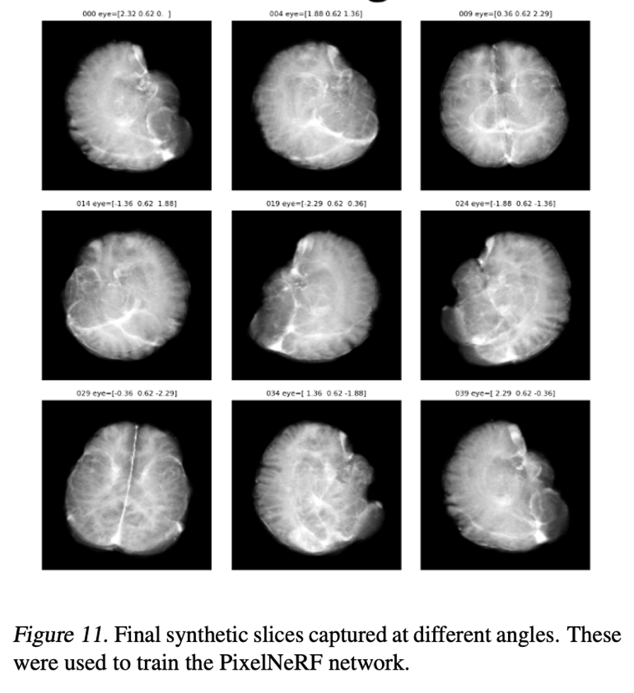
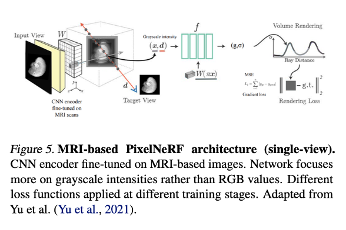
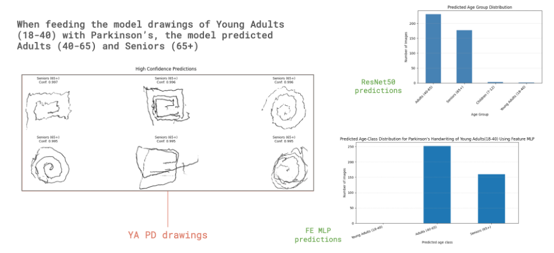
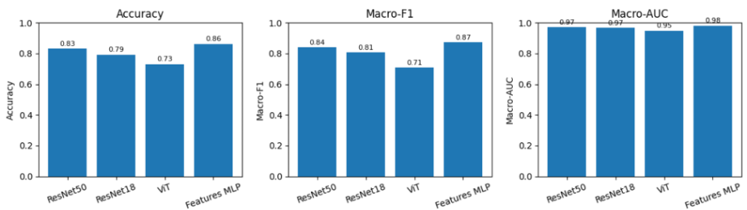

SLAM + 6 DoF Pose Estimation
Class presentation on simultaneous localization and mapping (SLAM) and 6 degrees-of-freedom (6 DoF) pose estimation, covering current approaches in the field.
Download slides (.pdf)Structured Light
Class presentation on structured light 3D scanning techniques.
Download slides (.pdf)Reversi the Kirby
Programmed a hexagonal-board variant of Reversi with a Kirby (black) vs. Meta Knight (white) theme, using a Model-View-Controller architecture. Included four AI player strategies, an optional square-board mode, an in-game hint system, and integration of a provider team's view/strategy code via mock classes.


Klondike Solitaire
Implemented Klondike Solitaire with a Model-View-Controller architecture and a text-based interface. Built three rule variants (Basic, Whitehead, and Limited Draw) sharing a common abstract base class to keep the rule logic DRY across variants.


N-Puzzle Solver
Course project implementing search-based solving strategies (e.g., A*) for the sliding N-puzzle.
class Solver:
"""Class that works with the PuzzleState class to solve the puzzle"""
def __init__(self, n):
self.n = n
self.nodes_expanded = 0
self.max_search_depth = 0
self.running_time = 0
self.max_ram_usage = 0
def reconstruct_path(self, state):
"""Reconstructs the path from the initial state to the given state"""
path = []
current = state
while current.parent is not None:
path.append(current.action)
current = current.parent
path.reverse()
return path
def measure_ram_usage(self):
"""Measures the current RAM usage of the program"""
start_ram = resource.getrusage(resource.RUSAGE_SELF).ru_maxrss
search_ram = resource.getrusage(resource.RUSAGE_SELF).ru_maxrss - start_ram
return search_ram / (2**20)
def solve_bfs(self, initial_state):
return self.solve(initial_state, method="bfs")
def solve_dfs(self, initial_state):
return self.solve(initial_state, method="dfs")
def solve_ast(self, initial_state):
return self.solve(initial_state, method="ast")2048
Course project implementing the 2048 game with AI-driven move strategies.
class AStarFrontier(Frontier):
"""Class that represents the A* frontier"""
# Uses priority queue based on the value of f=g+h, where g is the cost to
# reach the node and h is the heuristic estimate to the goal
# Manhattan dist used for heuristic value
def __init__(self):
self.frontierh = []
self.frontierset = set()
self.counter = 0
def push(self, state):
"""Add a state to the frontier"""
heapq.heappush(self.frontierh, state)
self.frontierset.add(state.config_tuple)
def pop(self):
"""Pop a state from the frontier"""
if self.is_empty():
return None
# pop the state with the lowest f value from the priority queue
state = heapq.heappop(self.frontierh)
self.frontierset.remove(state.config_tuple)
return state
def is_empty(self):
"""Check if the frontier is empty"""
return not self.frontierh
def contains(self, state):
"""Check if the frontier contains the given state"""
return state.config_tuple in self.frontiersetSudoku as a Constraint Satisfaction Problem
Course project modeling and solving Sudoku puzzles using constraint satisfaction problem (CSP) techniques.
Three-Dimensional Reconstructions of the Brain Using Neural Radiance Fields
Implemented an MRI neural rendering pipeline using PixelNeRF to synthesize novel viewpoints of the brain from a single MRI scan. Curated and preprocessed a multi-site dataset of roughly 860 MRI slices (from UCSF, BraTS 2020, and whole-brain sources), including synthetic 360° slice generation, and trained a PixelNeRF-based renderer that predicts voxel-wise contrast parameters and performs volumetric rendering to output grayscale intensity per ray.


Estimating Brain Age Gap from Handwriting and Drawing Data
Built a deep learning pipeline to estimate a behavioral "brain age gap" from handwriting and drawing samples, comparing image-based backbones (ResNet-18, ResNet-50, ViT) against a custom 63-dimensional stroke-feature MLP. The feature-based MLP performed best (~86% test accuracy), and the trained models were applied to Parkinson's and Autism Spectrum Disorder handwriting/drawing data to explore brain age gap as a low-cost screening signal complementary to MRI-based biomarkers.

